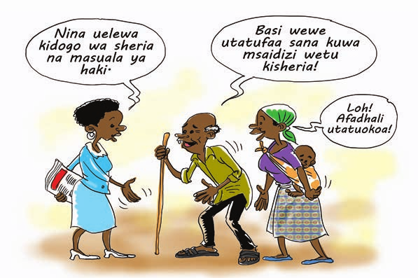
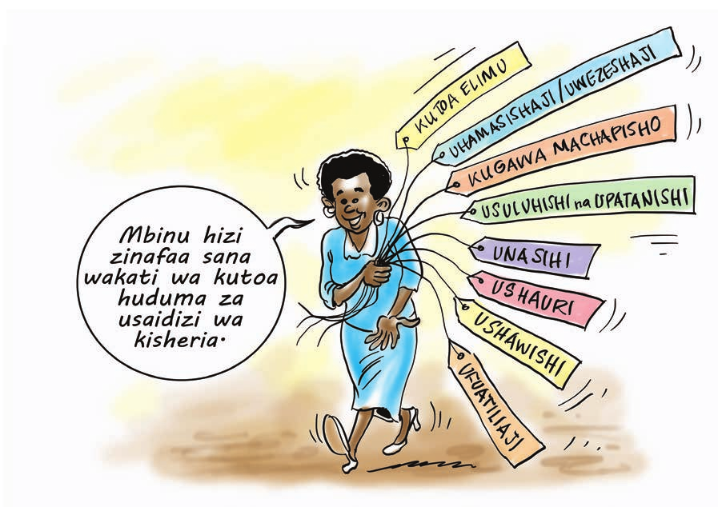

Sehemu ya Kwanza - Dhana ya msaada wa sheria na Msaidizi wa Kisheria
Jinsi ya Kuendesha
Mwezeshaji anaweza kutumia mbinu zifuatazo katika kufafanua maana ya Msaidizi wa
kisheria. (Mbinu hizi ni pendekezi tu, mwezeshaji anaweza kutumia mbinu nyingine
yeyote anayoona inafaa kwa mada hii, mazingira, vifaa na hata aina ya washiriki):
- Mwezeshaji andika maneno Msaidizi wa Kisheria na dhana ya msaada wa sheria
kwenye bango kitita au ubaoni kutokana na mazingira unayo wezeshea mfano
shuleni, ukumbini n.k
- Wagawe washiriki wawili wawili (jinsi {ME/KE} izingatiwe kati yao) na kwa
muda wa dakika 5 wajadili yafuatayo;
- Sheria ni nini?
- Msaada wa sheria ni nini?
- Msaidizi wa kisheria ni nani?
- Wasaidizi wa kisheria wanafanya shughuli zipi katika jamii?
- Baada ya kumaliza kujadiliana, washiriki watoe mrejesho. Muda uzingatiwe
sana wakati wa kupokea mrejesho huo. Mwezeshaji andika majibu ya washiriki
ubaoni au kwenye bango kitita.
Muhimu: Mwezeshaji ongoza vema mjadala, wasikilize washiriki kwa
makini bila kutoa ushawishi wa majibu kutoka kwako au kupendelea. Toa nafasi
sawa kwa kuzingatia jinsi, umri na namna washiriki walivyokaa (mfano mbele,
nyuma, kulia, kushoto, katikati). Hakikisha unaorodhesha majibu ya washiriki
kwenye bango kitita au ubaoni.
Mchango wa Mwezeshaji
Mwezeshaji kumbuka kuna uwezekano washiriki kutofahamu kabisa dhana ya msaidizi wa
kisheria na msaada wa sheria. Tumia mifano halisi na simulizi za kweli katika
mazingira ziishiyo jamii zetu kuelezea dhana ya msaidizi wa kisheria na umuhimu
wa uwepo wa msaada wa sheria kwenye jamii . Fafanua kwa kusisitiza kuwa Msaidizi
wa Kisheria si mwanasheria au wakili hata kidogo. Kwa mfano, waweza kuwauliza
washiriki ikiwa wanawafahamu wakunga na shughuli za wakunga katika jamii
zao. Eleza kuwa kama ambavyo wakunga si madaktari, ijapokuwa wanasaidia shughuli
fulani za kiafya katika jamii, ndivyo ilivyo kwa wasaidizi wa kisheria, nao
pia si wanasheria au mawakili japokuwa wanafanya shughuli za usaidizi wa
kisheria.
Tumia ujuzi wako na maarifa yako ya mbinu za uwezeshaji kufafanua vema na kwa mifano
mada hii. Epuka kutumia muda mwingi kuelezea mambo ambayo tayari yamekwisha
fafanuliwa na washiriki kwa ufasaha. Anza na utangulizi kama inavyoonekana
hapo chini.
Utangulizi
Upatikanaji wa haki na huduma za kisheria ni tatizo linaloikabili sehemu kubwa ya
jamii ya Watanzania, hasa walio masikini. Huduma za kisheria zimekuwa zikitolewa
kwa kugharimiwa na hivyo kufanya jamii zenye uwezo mdogo wa kuwalipa mawakili
kukosa huduma hii ya msingi. Zaidi, huduma za msaada wa kisheria kwa kiasi
kikubwa imekuwa ikitolewa maeneo ya mijini na hivyo kuzifanya jamii za vijijini
kugharimika kifedha kwa usafiri, kutumia muda mwingi kufuata huduma hizi mijini
na kupoteza muda wa uzalishaji mali.
Kwa changamoto hizo, ipo haja ya kuwa na watu ambao watatoa usaidizi wa kisheria.
Huduma watakayoitoa wasaidizi wa kisheria itasaidia jamii, wakiwemo wanawake,
watoto, wanaume, wazee na watu wenye ulemavu kufikia suluhu ya matatizo yao
kisheria. Sehemu hii inafafanua maana ya sheria, msaidizi wa kisheria na sifa
za msaidizi wa kisheria
Maana ya Sheria
Neno “Sheria” linaweza kutafsiriwa kwa namna nyingi tofauti. Hata hivyo tafsiri iliyo
rahisi kabisa sheria ni kanuni zilizotungwa na Bunge au taasisi zingine zenye
mamlaka ya kutunga sheria ambazo huelekeza namna bora ya watu kuenenda kwa
lengo la kuendeleza na kudumisha haki na amani, utulivu na utengamano.
Kanuni hizi hutokana na vyanzo mbalimbali, mfano katiba ya nchi, kutungwa na bunge,
sheria ndogo zinazotungwa na serikali za mitaa, sheria za kimila ambazo hutokana
na mila na desturi na sheria zinazotokana na hukumu za mahakama za juu (Mahakama
kuu).
Maana ya msaada wa sheria
Msaada wa sheria ni huduma ya kisheria inayotolewa bure na mwanasheria au msaidizi
wa kisheria kwa mhitaji. Huduma hii hujumuisha ushauri wa kisheria , elimu
ya sheria, kujengea jamii uelewa kuhusu sheria na haki za binadamu, kuwaelekeza
wanajamii vyombo na taasisi ambazo wanaweza kupata huduma za kisheria kulingana
na tatizo la kisheria ambalo analo. Uandaaji wa nyaraka na uwakilishi wa mahakama
ni sehemu ya msaada wa sheria.
Maana ya Msaidizi wa Kisheria
Msaidizi wa kisheria ni mtu mwenye ufahamu wa sheria na masuala ya haki. Pia msaidizi
wa kisheria ni mtu mwenye ufahamu wa jamii anayoihudumia na matatizo ya kisheria
na haki yanayoikabili jamii hiyo. Mwenye kuweza kushauri na kuelekeza jamii
kufuatilia haki katika vyombo vya kisheria na vya haki.
Sifa za Msaidizi wa Kisheria.
- Awe na akili timamu;
- Awe amepata mafunzo ya usaidizi wa kisheria na kuwa na ufahamu wa masuala ya
kisheria, sheria mbalimbali za nchi;
- Awe na ufahamu wa haki za binadamu;
- Awe na sifa ya kuheshimu na kulinda sheria mbalimbali za nchi na haki za binadamu;
- Asiwe na sifa za ukiukaji wa haki za binadamu;
- Awe na moyo wa kuitumikia na kuhamasisha jamii katika masuala yanayohusu haki
zao za msingi ili kuweza kuleta ustawi, utengamano na Maendeleo endelevu
katika jamii;
- Awe mwadilifu, mwaminifu na aliyejijengea heshima katika jamii yake kutokana
na maadili aliyonayo lakini pia kutokana na jitihada zake katika kusaidia
jamii katika masuala mbali mbali;
- Awe anatoka katika jamii anayoitolea huduma ili aisaidie wakati wowote kunapohitajika
masuala ya usaidizi wa kisheria;
- Awe na ufahamu wa mila, desturi, tamaduni, na imani za jamii husika
- Awe mwenye uwezo wa kutunza siri za wateja anaowahudumia;
- Awe uelewa na elimu ya kutosha kufanya shughuli za msaada wa sheria
- Awe mwepesi wa kunyumbulika na kujifunza

Sehemu hii itajadili kwa kina mbinu za kutoa huduma ya msaada wa kisheria. Hata
hivyo, mbinu zingine kama vile ushawishi na ufuatiliaji wa uvunjaji wa haki za
binadamu na kisheria zitatolewa maelezo yake ya kina katika sura nyingine inayofuata.
i. Utoaji Elimu kwa Jamii na Uhamasishaji (Uwezeshaji Jamii Kisheria)
Utangulizi
Hii ni mbinu inayotumika kuifahamisha jamii kuelewa haki zao za kikatiba na kisheria
ili izitambue, kuzitetea na kuzilinda haki hizo pale watu binafsi au wanajamii
(katika ngazi za vijiji, kata na hata wilaya) wanapoporwa haki zao na mamlaka
za serikali, watumishi wa umma au watu binafsi. Mfano wa elimu itolowayo kwa
jamii ni haki ya kumiliki ardhi, nguvu na mamlaka ya wanakijiji kupitia mkutano
mkuu wa kijiji katika ugawaji wa ardhi ya kijiji, haki za binadamu, haki za
wanawake na watoto n.k.
Mbinu hii inaweza kutumika katika majukwaa mbalimbali kwa mfano kwenye mikutano
ya vijiji, sherehe za kimila, gulio, siku za ibada, michezoni, kwenye vikundi
vya kina mama, VICOBA n.k. Pia inaweza kutolewa kwa njia ya mhadhara, redioni,
mazungumzo ya kawaida baina ya vijana, wazee au viongozi wa kimila, kidini
na kiserikali.
Ili kuwezesha, kuelimisha au kuhamasisha jamii kufahamu haki zao, msaidizi wa
kisheria atafanya yafuatayo;

Jinsi ya Kuendesha
- Mwezeshaji awagawe washiriki katika makundi makuu mawili, kisha waandae namna
ya kuendesha uwezeshaji wa mada watakayoichagua.
- Kisha washiriki kutoka kundi moja watumie mbinu walizoziandaa kuwezesha kundi
jingine.
- Kundi litakalokuwa linawezeshwa liwasilishe mrejesho/tathmini.
- Mwezeshaji ahitimishe mjadala kwa kufafanua hatua stahiki.
Njia Mbadala
-
Wagawe washiriki kwenye makundi manne, kila kundi litaje na kuelezea mbinu za uwezeshaji
watakazotumia kuhamasisha jamii
Au
-
Kwa kutumia njia ya bungua bongo, mwezeshaji anaweza kuendesha mjadala utakaoonesha
hatua za kuandaa uwezeshaji
Mchango wa Mwezeshaji
Baada ya kupata mchango kutoka kwa washiriki, mwezeshaji aweke mkazo kwa washiriki
kwamba wakati wa kutoa elimu na kuhamasisha jamii, ni vema wafanye yafuatayo;
-
Kujiandaa vyema kabla ya kuanza shughuli za utoaji wa elimu kwa jamii
(uwezeshaji)
; Katika kujiandaa kufanya uwezeshaji ni vyema kufahamu au kuzingatia
mambo makuu yafuatayo;
- Andaa mavazi ya heshima na yenye hadhi ya mwezeshaji kulingana na tamaduni,
mila, rika na hata mazingira ya wahusika;
- Soma na kuelewa mada au jambo la kuwezesha/kuelimisha;
- Tayarisha au andaa mazingira na vifaa vya kuwezeshea (kuelimishia)
kulingana na mazingira;
- Andaa rejea au mifano halisi ya kuwezeshea;
- Andaa mada kulingana na uhitaji wa walengwa na muda na kazi za kila
hatua katika uwezeshaji;
- Andaa maswali na kazi za vikundi; na
- Andaa vitu vingine vyovyote muhimu wakati wa uwezeshaji
-
Kuandaa au kujua mbinu au namna ya kutumia wakati wa uwezeshaji, au ufundishaji
- Andaa namna ya kuanza kuwezesha au kuongea na wahusika;
- Kwa kushirikiana na wahusika/washiriki, andaa na fafanua taratibu mbalimbali
zitakazotumika wakati wa uwezeshaji;
- Andaa utaratibu wa kufahamu matarajio ya washiriki, uelewa wao kuhusu
lengo la uwezeshaji, hofu zao kuhusu shughuli ya uwezeshaji;
- Tumia mbinu za uwasilishaji mada kama vile mhadhara, maigizo, mjadala,
maswali na majibu, bungua bongo, video, picha na maswali, makundi
ya majadiliano; kisa mkasa, matembezi ya kujifunza, nyimbo, ngonjera
na mashairi;
- Epuka kukaa sehemu moja ya ukumbi au eneo unalowezeshea;
- Zungumza kidogo kisha chokoza washiriki kwa namna yeyote ili waongee
na kuchangia zaidi;
- Rudia au rejea kila baada ya muda ili kuweka msisitizo katika jambo
ulilokwisha lifanya.
- Zingatia muda wa uwezeshaji.
-
Kuandaa namna ya kujua ufahamu wa mada baada ya kumaliza uwasilishaji au ufundishaji.
- Toa maswali ya mhusika mmoja mmjoa au vikundi;
- Fanya tathmini ya uwezeshaji kwa kutumia maswali yaliyotayarishwa au
maswali ya papo kwa papo;
- Fanya mrejesho wa kazi iliyopita kwa kutumia mrejeshaji;
- Toa maswali kwa kuandika au kufanya mtihani.
Usuluhishi na Upatanishi
Jinsi ya Kuendesha
-
Mwezeshaji aandae kisa mkasa chenye mgogoro unaohitaji usuluhishi;
Au
Washiriki wasimulie mgogoro uliopo au uliowahi kutokea kwenye jamii yao;
- Wagawe washiriki kulingana na nafasi zilizopo kwenye mgogoro mfano wasikilizaji,
wasuluhishi, wadaawa (walio kwenye mgogoro), mashahidi n.k. Washiriki
wote wapate nafasi kushiriki kwenye kisa mkasa hicho;
- Watende shughuli ya usuluhishi;
- Baada ya zoezi la usuluhishi kukamilika, washiriki wawasilishe mrejesho
kuhusu mafanikio, upungufu, changamoto, mbinu mbadala ambazo zingeweza
kutumika kwenye zoezi la usuluhishi.
Mchango wa Mwezeshaji Mwezeshaji wafafanulie washiriki mbinu ya usuluhishi na upatanishi
huku ukirejea mifano kadhaa.
a) Upatanishi
Katika upatanisho, tofauti na mapatano huwa ni makubaliano ya pande mbili
wa mgogoro kwa kuhusisha upande mwingine ulio nje ya mgogoro kusaidia kufikia
muafaka. Mara nyingi upatanishi hauhusishi njia zilizo rasmi katika kusuluhisha
wadaawa kama ilivyo kwenye mabaraza ya usuluhishi.
Njia hii hutumiwa sana na watu walio karibu na mgogoro kuzisaidia pande mbili
kufikia muafaka. Kwa mfano, kama kuna mgogoro baina ya baba na mama ndani
ya familia juu ya jambo fulani basi wawili hawa wanaweza
kumtafuta mtu wa tatu au zaidi ili asaidie kuwaweka pamoja, au kuwaunganisha
pamoja
katika hatua za kutafuta suluhu au muafaka wa mgogoro wao bila ya
kufikishana kwenye vyombo maalumu vya usuluhishi.
b) Usuluhishi
Tofauti na upatanishi, usuluhishi ni makubaliano baina ya pande mbili zilizo
katika mgogoro kwa kuhusisha
mtu maalumu au
chombo maalumu kama vile kituo cha upatanishi, baraza la upatanishi,
kutafuta suluhu. Mpatanishi hutumika kama daraja kuzisaidia pande mbili
kufikia muafaka. Katika usuluhishi wa aina hii, msuluhishi anaweza kufafanua
haki, wajibu na madhara ya kila upande na kuwaacha wenye mgogoro kufanya
maamuzi ya kutatua mgogoro wao.
Majukumu ya Msuluhishi
Kazi ya usuluhishi sio kazi rahisi kama ambavyo inaweza kuonekana. Kazi ya
kutambua na kuweka maslahi ya wadaawa katika mzani, kuwaunganisha wadaawa
waliokata mawasiliano kuridhisha pande zote mbili katika msingi wa mahusiano
sio kazi rahisi. Hata hivyo, ili kuhakikisha usuluhishi unaanza na kuisha
salama, msuluhishi anakuwa na majukumu kadhaa ambayo miongoni mwao ni haya
yafuatayo;
- Kuratibu mikutano ya usuluhishi ikiwa ni pamoja na;
- kuandaa sehemu na vitendea kazi vya usuluhishi,
- kuandaa agenda na taratibu zitakazo tumika kwenye hatua za usuluhishi,
- kutambulisha wadaawa kwenye mikutano ya usuluhishi, na
- kuelezea hatua za usuluhishi kwa wadaawa
- Kutengeneza mazingira ya kutogombana miongoni mwa wadaawa kwa kufungua na
kuhakikisha kuwa milango au njia zote za mawasiliano miongoni mwao zinafunguka
na wanawasiliana; Kutambua na kukusanya habari/taarifa mbalimbali ambazo
zinaleta vikwazo katika hatua za usuluhishi kwa kuruhusu wadaawa waelezee
hisia zao na kuchuja hisia kulingana na mwenendo wa usuluhishi;
- Kuwasaidia wadaawa kutambua na kujua masilahi na vipaumbele vyao kwa kulingana
na mwenendo wa usuluhishi kwa kutambua ukomo wa madai yao kulingana na
hali halisi;
- Kuruhusu hatua ya usuluhishi iendelee kulingana na mahitaji na mwenendo wa
wadaawa kwa kuwasaidia kutafsiri vigezo mbalimbali vya ufumbuzi vinavyokubalika
na kutafuta njia mbadala ya ufumbuzi wa mgogoro wakati wa zoezi la usuluhishi
na kutathimini;
- Kuwasaidia wadaawa kutayarisha na kuandika mkataba wa makubaliano ikiwa ni
pamoja na kuhakikisha kwamba makubaliano hayo yanapata nguvu ya kisheria
kwa kuusajili mkataba wa makubaliano mahakamani kama mahakama inahusika.
Faida za Usuluhishi
Jinsi ya kuendesha
Kwa kutumia kisa mkasa hapo juu, mwezeshaji anaweza kufanya yafuatayo;
- Kuendesha mjadala kwa washiriki wakitaja faida za usuluhishi na upatanishi
- Au wagawe kwenye makundi ili washiriki waelezee faida za usuluhishi na
Mchango wa Mwezeshaji
Mwezeshaji eleza kuwa usuluhishi una faida nyingi katika mlolongo wa utatuzi
wa migogoro. Miongoni mwa faida za usuluhishi ni kama ifuatavyo;
- Usuluhishi husaidia wadaawa kuwa na mahusiano mazuri hata baada ya mgogoro.
Hii hutokana na ukweli kwamba, wadaawa wamemaliza mgogoro wao kwa makubaliano
na hivyo hakuna anayepoteza au kupata zaidi ya mwingine.
- Usuluhishi hufungua mahusiano mapya katika mahusiano ya wadaawa. Mfano:
migogoro ya kazi, migogoro ya majirani, migogoro ya wafanyabiashara,
na hata migogoro ya kisiasa inaweza kuleta sura mpya baada ya kupata
suluhu ya mgogoro.
- Usuluhishi haufungwi na kubanwa na kanuni za kiufundi, sheria wala taratibu
kwani wadaawa kupitia kwa msuluhishi wanaweza;
- kupanga sehemu ya kufanyia usuluhishi;
- kuamua wakati wa kufanya usuluhishi;
- kuamua idadi ya wahusika katika usuluhishi;
- kuchagua vigezo vya ufumbuzi wa tatizo;
- Usuluhishi hauna urasmi wa aina yoyote kwani wadaawa wana uwezo wa
kuwasilisha madai na hisia yao kwa kutumia njia yeyote wanayoona
inawafaa na kufahamika upande wa pili;
- Usuluhishi hutumia mda mfupi kuliko njia nyingine za ushindani kwa kutumia
mahakama au mabaraza;
- Usuluhishi hauna gharama kubwa kwani matumizi yasiyo ya lazima kama vile
ya uwakilishi sio vitu vya lazima. Upangaji wa mahali pa kusuluhisha,
muda wa kusuluhisha, nani wa kuendesha usuluhishi, na vingine vingi
vinavyohitajika wakati wa usuluhishi vinaweza kufanyika kulingana na
uwezo na nafasi za wadaawa;
- Usuluhishi hauna ukomo na haufungwi na matokeo yake. Wadaawa kama wataona
hawaridhiki na makubaliano yaliyopita, wako huru kuendelea na usuluhishi
ili mradi tu kila upande ufikie mwafaka unaokubalika na pande zote;
- Usuluhishi hutunza siri za wadaawa ikiwa ni pamoja na hisia na mwenendo
wa usuluhishi. Mambo mengine yote, isipokuwa tu yale yatakayowekwa
kwenye mkataba (endapo wadaawa wataandikishiana) yanaweza kuonekana
kwa jamii zingine.
Unasihi
Jinsi ya Kuendesha
-
Mwezeshaji andaa kisa mkasa kinachohitaji huduma ya unasihi
Au
Washiriki wasimulie tukio la mhusika katika jamii yao linalohitaji unasihi
- Washiriki wajichague au mwezeshaji chagua washiriki watakaoshiriki
kwenye tukio la unasihi
- Wafanye shughuli ya unasihi mbele ya washiriki wengine
- Baada ya zoezi la unasihi kukamilika, washiriki wawasilishe mrejesho
kuhusu mafanikio, upungufu, changamoto, mbinu mbadala ambazo zingeweza
kutumika kwenye zoezi la unasihi
- Washiriki pia waeleze mahala panapofaa kufanyia unasihi
Mchango wa Mwezeshaji
Mwezeshaji fafanua vile ambavyo wasaidizi wa kisheria wataitumia mbinu
ya unasihi katika shughuli zake za kuhudumia jamii kama inavyoelezwa
hapo chini.
a. Maana ya Unasihi
Maana yake ni maoni au mawazo anayopatiwa mtu mwenye tatizo ili aweze kutumia
kupata suluhisho wa tatizo lake. Unasihi humsaidia mtu kulielewa tatizo
lake vizuri zaidi na kupata mbinu za kukabiliana na tatizo hilo bila
kumuathiri. Unasihi humwezesha mtu kupata matumaini mapya na hivyo kupata
unafuu wa mzigo wa mawazo alionao baada ya kufahamu namna ya kushughulikia
tatizo lake.
b. Mahali pa Kutolea Unasihi
- Mahali popote penye utulivu na faragha; mfano
- Ofisini au mahali pa uwazi;
- Ndani ya nyumba;
- Kwenye uwanja mkubwa wenye faragha;
- Kandokando ya bahari (beach);
c. Wakati wa Kufanya Unasihi
- Mnasihi anapogundua kuwa kuna suala la kufanyia unasihi;
- Anapoombwa na wadaawa kutoa unasihi;
- Wadaawa wanapofika kuomba ushauri wa aina nyingine na yeye kugundua cha
kufanya;
d. Umuhimu wa Unasihi
- Unasihi husaidia kutatua matatizo ambayo yangeweza kumletea mtu madhara
kiafya, kisaikolojia, kimaadili, kisheria na kijamii;
- Unasihi husaidia kujenga mahusiano mazuri kwa jamii kwa kupunguza au
kuondoa migogoro ya uvunjaji wa sheria katika jamii;
- Hutatua na kumaliza tatizo la wadaawa kwa muda mfupi na hivyo kuwasaidia
waendelee na shughuli zingine za kimaendeleo;
- Hupunguza msongamano wa mashauri katika vyombo vya utoaji haki;
e
1. Mapokezi
- Katika hatua hii, utambulisho unapaswa kufanyika na mapokezi yatolewe
vyema kwani mara nyingi mtu huwa katika hali isiyo ya kawaida kwa
hivyo aina ya mapokezi anayopata kwa mnasihi inaweza kuwa kikwazo
kikubwa kwake au kitulizo. Hivyo, mshauri anatakiwa kujenga mazingira
mazuri na mnasihiwa ili awe huru ,na ajenge utulivu , na ukaribu
kueleza shida zake kwa kuhakikisha;-
2. Kuibua tatizo
Katika kuibua tatizo, mnasihi anapaswa azingatie yafuatayo;-
- kusikiliza kwa makini ili aweze kuelewa tatizo la mshauriwa;
- kuonesha kuwa anamjali mnasihiwa kwa kuonesha ishara kama kuitikia
na kumwangalia kwa makini;
- kuheshima, kujali na kutulia katika kuhoji maswali ili kupata undani
wa tatizo;
- kuweka kumbukumbu kwa umakini bila kuchukua muda mwingi
- kutuliza huzuni au hasira za mtu wakati wa unasihi;
- kufahamu hitaji au shida ya mtu wakati wa zoezi la unashi;
3. Kufikia Suluhu
- Mnasihi kufanya muhtasari wa maelezo ya mshauriwa;
- Kutoa mapendekezo yake kuhusu hatua za kuchukua kuendana na tatizo lake.
Katika hatua hii mnasihi anatakiwa amweleze msimamo kisheria au kitaalam
kuhusu tatizo lake. Pia amweleze njia mbadala ya kutatua tatizo lake,
faida na hasara zake;
- Mnasihi ampe mtu muda wa kutafakari kabla ya kufanya maamuzi;
- Mnasihi na mnasihiwa kwa pamoja wakubaliane hatua za kuchukua;
- Mnasihiwa asilazimishwe kufanya maamuzi ambayo haridhiki nayo kwani yeye
ndiye mtekelezaji wa maamuzi.
4. Ufuatiliaji
Baada ya kufanya maamuzi, mnasihi na mnasihiwa wapange ufuatiliaji. Inawezekana
ushauri zaidi au mbinu mbadala ikahitajika ili kufanikisha au kutatua
tatizo. Katika hatua hii, kimsingi mnasihiwa na mnasihi wanafanya tathmini
kuona kama kuna dalili za mafanikio au la.
f. Maadili, Miiko au Mambo Muhimu Kimaadili kwa Mnasihi
- Kuepuka kumlaumu mshauriwa. Mnasihi hatakiwi kumwonyesha mnasihiwa kuwa
yeye ndio chanzo cha tatizo au ndiyo tatizo;
- Mnasihi hatakiwi kutumia lugha ngumu ambayo mnasihiwa atapata shida kuelewa;
- Ni mwiko mnasihi kutoa siri ya mshauriwa;
- Kutomkatisha tamaa mnasihiwa bali kuendelea kumtia moyo kuwa shauri lake
litapatiwa ufumbuzi kwa kuzingatia haki;
- Kutotoa ahadi za uongo au zisizoweza kutekelezwa;
- Kutochanganya tatizo la mnasihiwa na matatizo ya watu wengine;
- Kwa hali yeyote ile, kutoonesha kumdharau mshauriwa;
- Kutoegemee au kupendelea upande wowote;
- Ni mwiko kupokea rushwa; na
- Kutomharakisha mshauriwa/mnasihiwa bali kutoa muda wa kutosha katika
kusilikiza tatizo na mapendekezo ya mtu.